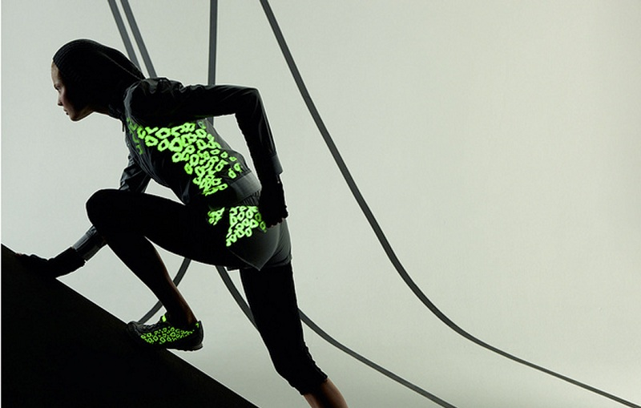
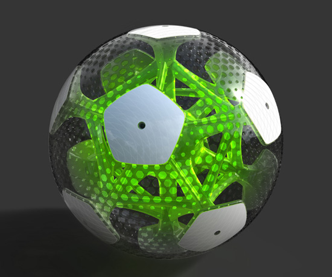

Tendências para o Futuro(){
i++
Por: Guilherme Castilho Casassanta

O desenvolvimento tecnológico não está presente apenas nos celulares, dispositivos móveis, computadores, equipamentos eletrônicos, mas também nos mínimos detalhes do mundo dos esportes, desde os trajes dos atletas até as bolas de futebol e o arbitros dos eventos.
No mundo dos esportes o futuro não é diferente do mundo dos dispositivos eletrônicos. Pesquisas e projetos de entidades tecnológicas de respeito como a NASA ( Associação Aeronáutica Espacial Nacional ) e ESA ( Agência Espacial Européia ) investem em tecnologias que pretendem revolucionar modalidades esportivas.
No futebol, segundo estudos publicados em Londres, robôs poderão substituir os bandeirinhas nos jogos a partir de 2020. Onde sensores de luz colocados no campo poderão detectador com precisão a sáida de bola e o posicionamento dos jogadores.
As inovações não param por ai. Estudos médicos poderão usar terapia genética para minimizar o tempo de recuperação dos jogadores em campo, além de desenvolver tecnlogias para serem aplicadas nos unifores dos jogadores, diminuindo a taxa de suor e prevenindo alguns ferimentos.

Outra grande tendência para o futuro é a bola CITRUS da empresa Agent. A bola apresenta um CPU ( Unidade Central de Processamento ) no seu interior capaz de medir a força e a velocidade de cada chute que recebe, além de uma câmera capaz de proporcionar imagens inovadoras do próprio ângulo da bola. Além disso a CITRUS muda de cor quando entra no gol ou sai do campo, tornando inquestionável gols ou escanteios.
As inovações no esporte prometem expandir os limites dos atletas, e tornar ainda mais empolgante as competições esportivas.
Referências:
Terra Esportes - Robô Bandeira
Globo Esporte - CITRUS
}